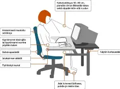

Toimistoergonomian perusteet
Hyvä ergonomia on tärkeää, jotta vältät niska- ja hartiavaivat sekä parannat työhyvinvointia. Pienillä muutoksilla voi olla suuri vaikutus jaksamiseen!
Ergonomiset ohjeet:
- Säädä tuoli niin, että jalat yltävät tukevasti lattiaan
- Pidä selkä suorana ja hartiat rentoina
- Sijoita näyttö silmien korkeudelle
- Pidä taukoja 30–60 minuutin välein
- Venyttele ja liiku säännöllisesti päivän aikana
Esimerkki hyvästä työpisteestä:
